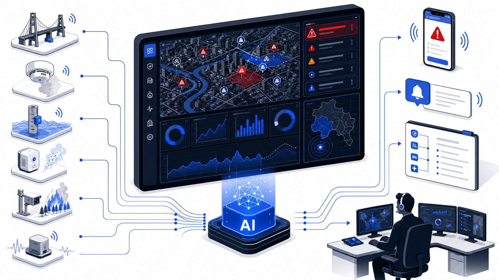
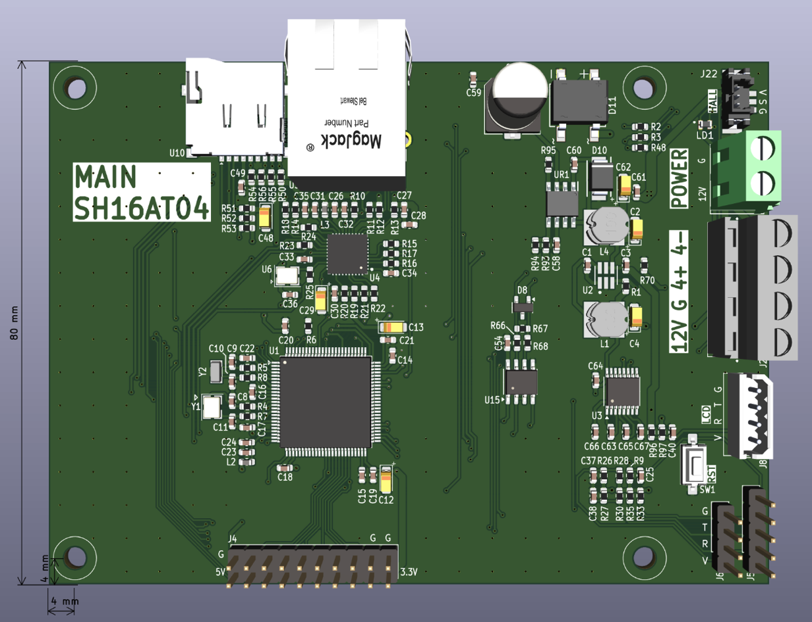
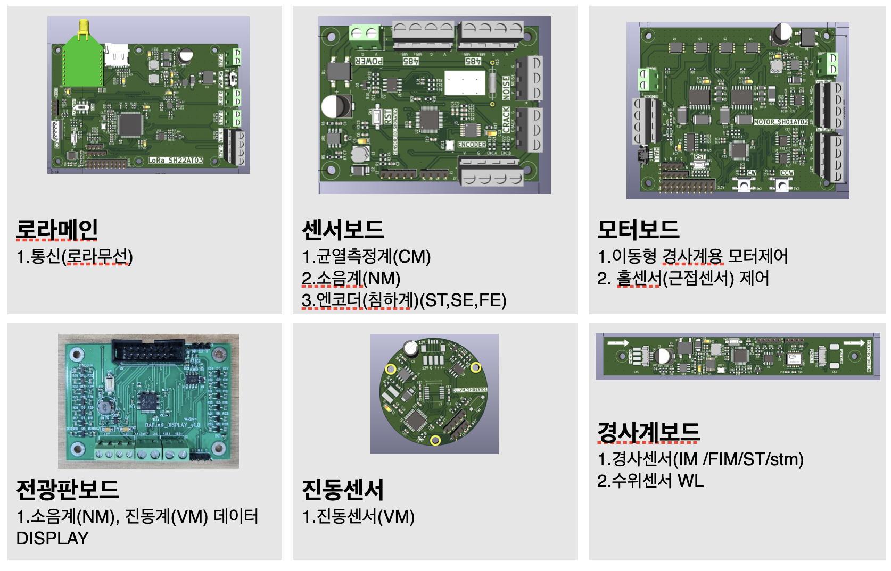
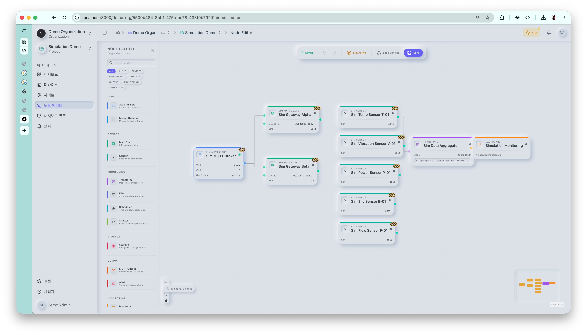
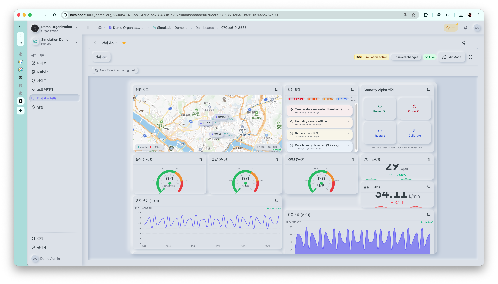
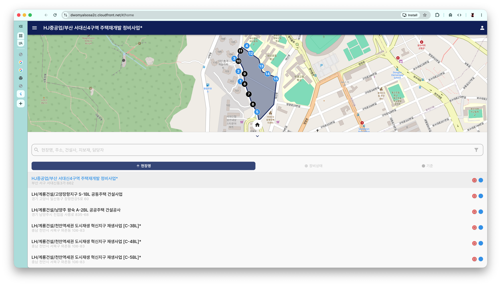
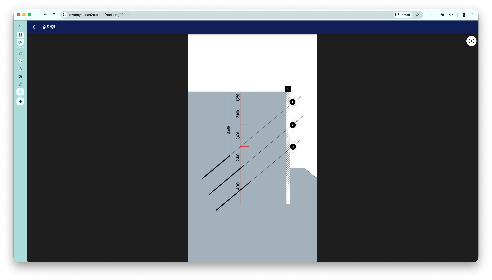
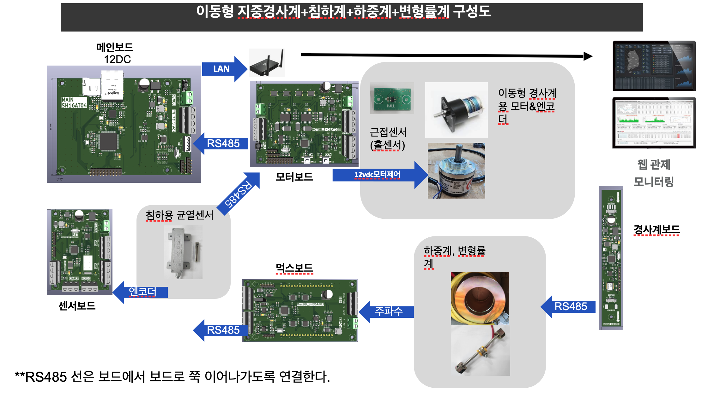
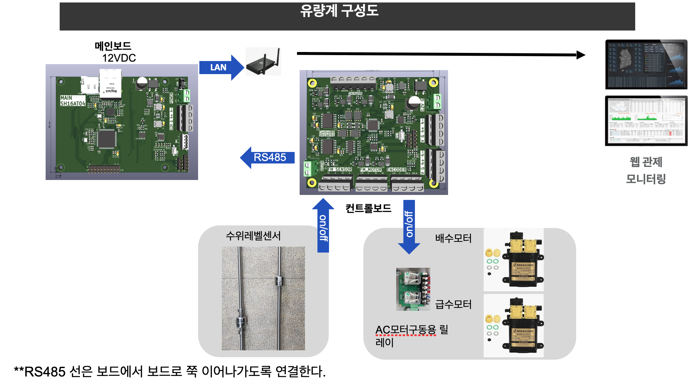

현장 맞춤형 모듈러 IoT
플랫폼
센서 · 통신보드 · 시뮬레이션 · 관제 대시보드를
원스탑으로 책임지는 도시 · 산업 안전 IoT 인프라
목차
총 27 페이지 · 약 20분 발표 권장
Ⅰ. 회사 · 배경
- 03 · 회사 소개
- 04 · Executive Summary
- 05 · 시장의 3가지 고질병
- 06 · 추진 배경 · 정책 부합도
Ⅱ. 솔루션 · 기술
- 07 · 솔루션 개요 (4 컴포넌트)
- 08 · 자체 설계 통신보드
- 09 · 모듈러 센서 라인업
- 10 · 구성 시뮬레이션 웹
- 11 · 커스텀 관제 대시보드
- 12 · End-to-End 아키텍처
- 13 · 법령 · 표준 준수
Ⅲ. 차별점 · 사례
- 14 · 차별점 · 경쟁 비교 (실명 4사)
- 15~19 · 적용 사례 5건
- 20 · 확장 가능 분야
Ⅳ. 시장 · 사업화
- 21 · 시장 규모 · TAM/SAM/SOM
- 22 · 인증 · 실적
- 23 · 비즈니스 모델 · 공공조달 전략
Ⅴ. 실행 · 합의
- 24 · 실행 로드맵 · 간트
- 25 · 위험 · 가정 · 제외 신규
- 26 · 사업계획 · Ask
- 27 · 수락 · 다음 단계 신규
발표 가이드
의사결정자: 04·14·21·27 (4장) · 기술검토자: 07~13 + 25 (8장) · 예산담당: 21·23·26 (3장)
회사 소개
회사 개요
- 회사명 · 모듈스(Modules)
- 대표자 · 이태균
- 설립 · [2020. 05]
- 본사 · [경기도 성남시 분당구 대왕판교로645번길 12, 5층 일부(삼평동, 경기창조경제혁신센터)]
- 핵심 분야 · 모듈러 IoT 시스템 · 통신보드 설계 · 관제 플랫폼
비전 / 미션
Vision
Connect Anything, Anywhere, Anyhow
무엇이든, 어디에든, 어떻게든
Mission
IoT for Safety
안전을 위한 IoT
사업 영역
- HW — 자체 설계 통신보드 · 모듈러/주문형 센서 제작
- SW — 구성 시뮬레이션 웹 · 커스텀 관제 대시보드 · 룰 엔진
- SI — 현장 설치 · 통합관제 연동 · 유지보수(SLA)
- 이용 분야 — 화재·교량·침수·사면·가스·지진·산불 등 자유 확장
핵심 가치
센서에서 관제까지의 제품을,
주문에서 관리까지의 절차를 한 곳에서 공급합니다.
분야·벤더가 분절된 기존 안전 IoT의 한계를, 단일 공급자가 제품과 서비스 전 구간을 책임지는 방식으로 해소합니다.
공급 범위 — 제품
표준 센서 + 주문형 제작
화재 · 수위 · 진동 · 가스 등
자체 설계 모듈러 보드
다종 센서 · 통신 표준화
시뮬레이션 웹 + 커스텀
대시보드 + 알림 · 룰엔진
공급 범위 — 절차
현장 진단 · 사양 협의 · 견적 산정
웹 시뮬레이터로 구성 · 통신 사전 검증
설치 · 통신 연동 · 관제 셋업
유지보수 · 원격 펌웨어 갱신 · 운영 지원
안전·재난 IoT 시장의 3가지 고질병
벤더 종속과 파편화
화재·교량·수위·가스 등 분야별로 벤더·프로토콜·관제 소프트웨어가 모두 따로. 한 도시에 5~10개 관제 시스템이 병렬 운영됨.
커스터마이즈 불가
현장(교량 형식, 지형, 시설 노후도)마다 요구가 다른데, 기성품은 “센서 종류·임계치·대시보드”를 바꾸기 어렵고 비쌈.
도입 전 검증 부재
실제 설치 후에야 데이터 품질·통신 음영·관제 UX 문제가 드러남. 재공사·재발주가 빈번하고 예산 손실 큼.
현장 보이스
- “교량 점검 IoT는 있는데, 침수·기울기는 또 다른 업체에서 사야 한다.”
- “관제 화면을 우리가 원하는 대로 못 바꾼다. 매번 SI 견적이 나간다.”
- “테스트 없이 깔았더니 일부 구간 통신이 안 잡혀, 전량 재시공.”

추진 배경 및 정책 부합도
본 제안은 정부의 안전·재난 분야 디지털 전환 정책과 직접 연계되며, 다분야 안전 IoT의 한계를 모듈러 방식으로 해소하고자 합니다.
사회·제도적 배경
- 노후 사회기반시설 증가 — 30년 이상 공공건물 비중 43.3% (2029 전망), 2024년 공공건물 화재 +22%(81→99건)
- 국토안전관리원 관리 시설물 48만개·1,350기관 (1·2·3종 합산 약 17만 동·개소)
- 행안부 2025 재난안전예산 26.1조 원 (432사업) — 안전 IoT 시장의 실질 재원
- 안전 IoT의 분야·벤더 파편화 — 통합 운용·예산 효율 저해
관련 정책 · 제도
- 디지털플랫폼정부 2025 예산 8,233억 — 재난·안전 데이터 통합활용 과제 (행안 AI 관제 124억, +100% YoY)
- 스마트도시 조성사업 2025 5개소 904억 · 디지털트윈국토 5,838억(디트 비중 68%)
- 시설물안전특별법·국가통합하천관리체계 — 상시계측·계측서 의무, 환경부 홍수특보 75→223지점(2025.5)
- 중대재해처벌법·스마트 안전장비 지원 2025 220개소(↑) — 산업·시설 안전 IoT 의무 강화
- 혁신제품·우수조달제품 국산 공공보급 트랙 — 2024 혁신 2,280개·2.7조, 시범구매 2026 839억
- 스마트도시 규제샌드박스 56건 승인·실증사업비 최대 5억 (방범·방재 선도적용)
본 사업의 정책 기여
다분야 안전 데이터를 단일 플랫폼에서 표준화·통합 관리함으로써, 부처·지자체 간 데이터 격차와 운영 분절을 완화하고 공공조달 경쟁력을 제고합니다.
현장 맞춤형 모듈러 IoT 플랫폼
자체 설계 통신보드를 중심으로 표준·커스텀 센서를 조합하고, 도입 전 시뮬레이션 웹에서 구성을 검증한 뒤, 커스텀 관제 대시보드로 운영합니다.
자체 설계 통신보드
다양한 센서 인터페이스·무선/유선 통신을 표준화한 모듈러 메인보드.
하드웨어
모듈러 센서 라인업
표준 센서 + 요청 기반 주문 제작. 화재·수위·진동·가스·기울기·기상 등.
센서
구성 시뮬레이션 웹
도입 전 보드+센서 구성을 가상 배치·테스트, 시제품 페이지 미리보기.
웹/시뮬
커스텀 관제 대시보드
위젯·맵·임계치·알림·권한을 현장 KPI에 맞게 즉시 구성.
SW/관제
자체 설계 통신보드

※ 외관·치수·인증 정보는 양산 사양 기준으로 갱신 예정
핵심 사양 (예시)
- 센서 인터페이스: I²C / SPI / UART / Analog / Digital GPIO / RS-485
- 무선 통신: LoRa, Wi-Fi, BLE (지역/현장 선택)
- 유선 통신: Ethernet, RS-485 데이지 체인
- 전원: DC 5–24V, 배터리 + 솔라 옵션, 저전력 슬립 모드
- 동작 환경: −20℃ ~ 70℃, 방수·방진 IP65 이상 하우징
- 보안: 디바이스 인증서 기반 TLS, OTA 펌웨어 업데이트
왜 자체 설계인가
- 외산 보드 종속 제거 → 국내 공급망·납기·A/S 안정
- 현장 요구에 따라 핀맵·통신 모듈을 슬롯 단위로 변경
- 관제·시뮬레이션 SW와 프로토콜 일체화 (디바이스–클라우드–UI 단일화)
모듈러 센서 라인업 + 주문형 제작
| 분류 | 표준 센서 (예시) | 측정 항목 | 주요 활용 |
|---|---|---|---|
| 화재/연소 | 광전식 연기, 정온식 열, CO/CO₂, 불꽃(IR/UV) | 연기 농도, 온도, 가스, 화염 | 건물·창고·전기실 화재경보 |
| 구조/진동 | 가속도(MEMS), 변위, 스트레인 게이지, 경사계 | 진동, 처짐, 응력, 기울기 | 교량·건축물·사면 계측 |
| 수위/수질 | 초음파 수위, 압력식 수위, 탁도, EC, pH | 수위, 유량, 수질 | 저수지·하천·맨홀·상습침수지역 |
| 가스/대기 | LEL 가연성, H₂S, NH₃, VOC, 미세먼지(PM) | 유출·농도·공기질 | 산업단지·맨홀·축사 |
| 지진/지질 | 3축 지진동, 지중 경사, 지중 함수율 | 가속도, 지반 변동 | 지진감지·산사태·옹벽 |
| 산불/환경 | 온도·습도, IR 열화상, 풍향풍속, 강수 | 발화 조건·기상 | 산림·임도·경계지 |
| 커스텀 | 요청 사양에 맞춘 주문형 센서 노드 제작 (특수 환경, 비표준 측정량, 고정밀 캘리브레이션 포함) | ||
① 표준
검증된 카탈로그에서 즉시 선택·납품. 짧은 리드타임.
② 조합형
1개 통신보드에 다종 센서 결합 (예: 교량 = 진동+기울기+온도+수위).
③ 주문 제작
요청 기반 신규 센서 모듈 설계·시험·납품.
구성 시뮬레이션 웹
- 보드 + 센서 가상 배치: 현장 도면/지도 위에 노드를 끌어다 배치
- 가상 데이터 스트림: 센서별 데이터 패턴·이상치를 시뮬레이션
- 통신 시뮬: LTE/LoRa/Wi-Fi 음영·지연 추정
- 시제품 미리보기: 실제 관제 대시보드와 동일 UI로 사전 확인
- 견적·BOM 자동 산출: 구성에 맞춘 단가·수량·전력 자동 계산

커스텀 관제 대시보드

구성 요소
- 위젯 빌더: 시계열, 게이지, 히트맵, 단순 KPI, 표, 알람 큐
- GIS 맵: 노드 상태·임계 초과·정전·통신두절 색상 구분
- 임계치/룰 엔진: 다단 경보, 시간대·계절 룰, 복합 조건
- 알림 채널: SMS · 이메일 · Webhook · 외부 통합관제 API
- 권한·이력: 부서/역할별 권한, 조작 감사로그, 보고서 자동생성
운영자 가치
- SI 의뢰 없이 운영자가 직접 화면·룰 변경
- 다부처/다현장 데이터를 한 화면에서 통합 관제
- 표준 API로 기존 통합관제·재난문자·119 시스템 연동
End-to-End 아키텍처
FIELD · 현장
NETWORK · 통신
PLATFORM · 클라우드
국산화·국내 호스팅
공공 보안 요구 충족. 망분리·전용회선 옵션.
표준 준수
MQTT, REST/JSON 호환.
통합 SDK
현장 SI / 기존 관제실과의 빠른 연계.
법령 · 표준 준수
본 시스템은 국내 관련 법령과 통신·정보보호 표준을 준수하도록 설계되어 있으며, 해당 인증·적합성은 도입 적용 시 구비합니다.
국내 법령
- 전파법 — 무선 통신 모듈 KC 적합성평가 (LoRa·BLE·Wi-Fi)
- 정보통신망법 — 침해사고 대응, 이용자 보호 의무
- 개인정보보호법 — 영상·위치 데이터 처리 시 적용
- 위치정보보호법 — 위치정보사업 신고 요건 (해당 시)
- 전기용품 및 생활용품 안전관리법 — 전원장치 KC 안전인증
국제 · 산업 표준
- 통신 프로토콜 — MQTT (OASIS), CoAP (IETF)
- IoT 플랫폼 — oneM2M, FIWARE NGSI-LD (호환 검토)
- 전송 암호화 — TLS 1.2/1.3, 디바이스 인증서 기반 상호인증
- 정보보호 관리체계 — ISO/IEC 27001, ISMS-P (추진)
- 전자파 적합성 — KS C 9610 (EMC), IEC 61000
행정안전부 재난안전데이터 표준 연계
표준 메타데이터·데이터 사전을 적용해 재난안전데이터 공유 플랫폼 및 통합관제센터와의 연계를 지원합니다.
제안 차별점
단일 책임 일괄 공급
센서·통신보드·통신·관제 소프트웨어를 단일 공급자가 책임지고 공급. 다중 벤더 간 책임 분쟁 방지.
모듈러 자유도
현장별 센서 조합과 관제 화면을 운영자가 직접 구성.
도입 전 검증
시뮬레이션 웹으로 데이터/통신/UI를 사전 확인. 재시공 비용 차단.
| 비교 항목 | 이제이텍 (교량 SHM) |
KT 세이프메이트 (화재) |
센코 (가스감지) |
제이알인더스트리 (산업안전) |
본 패키지 |
|---|---|---|---|---|---|
| 다분야 센서 통합 | 교량 특화 | 화재 특화 | 가스 특화 | 작업안전 특화 | 전 분야 단일 패키지 |
| 자체 보드 + 주문형 센서 | 계측 서비스 중심 | 통신사 솔루션 | 표준 감지기 | 시스템 통합 중심 | 자체 설계 · 주문 제작 |
| 도입 전 웹 시뮬레이션 | 없음 | 없음 | 없음 | 없음 | 웹 시뮬 + BOM 자동 |
| 운영자 셀프 대시보드 | 제한적 | 관제센터 중심 | 감지기 단위 | 관리자 중심 | 위젯 · 룰 직접 구성 |
| 액추에이션(모터제어) | 대상 외 | 대상 외 | 대상 외 | 대상 외 | 모터보드 자율 대응 |
| 대표 공공 레퍼런스 | 광안대교·거가대교 등 | 17건 예방·1.1만 점포 | 산업현장 다수 | 한국남동발전·시범사용 | 실증 → 혁신제품 추진 |
※ 경쟁사 정보는 각 사 공개 자료(2024–2025) 기준. 카테고리별 1위 사업자 위주 비교.
실제 적용 사례
아래는 현재까지 검증된 시나리오이며, 모두 동일한 통신보드·관제 플랫폼 위에서 구성됩니다.
화재경보기 시스템
연기·열·CO 다중 센서, 다단 경보, 119 연동.
노후 교량 거동 계측
가속도·기울기·변위·온도로 구조물 거동 상시 모니터링.
상습침수지역·저수지 수위
초음파/압력 수위 + 강수 + 맨홀 센서 통합 경보.
불안정 사면 기울기·하중
경사계·스트레인 게이지로 사면 붕괴 사전 감지.
가스 유출 감시
LEL/H₂S/VOC 다중 가스 + 풍향 결합으로 확산 추적.
지진 감지
3축 지진동 노드 분산 배치, 시·구 단위 통합 알림.
산불 감지·계측
온습도·풍속·IR 열화상 노드, 발화 위험지수 산출.
요청 기반 자유 확장
요구 시나리오에 맞서 신규 센서·룰·대시보드 즉시 추가.
A사 건축현장 하중계 모니터링
대형 건축현장에서 가설구조물·서포트·잭업 시스템에 작용하는 하중을 실시간 계측하여, 허용치 초과 시 즉시 현장에 경보를 보내고 관리자가 시공 절차를 조정할 수 있도록 지원합니다.


※ 실제 적용 현장 사진/도면으로 교체 예정 (현장명, 시공사 로고 표기 협의)
구성
- 센서: 로드셀(압축/인장), 변위센서, 보조 경사계
- 노드 수: [3000+]대 / 동시 수집 채널 [16ch]
- 통신: RS-485 데이지체인 → 보드 → LAN 혹은 LORA 업링크
- 전원: 현장 상시전원 + 배터리 백업(정전 대비)
- 경보: 임계치 다단(주의/경고/위험), 현장 부저·SMS·관리자 앱
도입 효과
- 가설구조물 붕괴 리스크 사전 감지 → 중대재해 예방
- 시공 일지·하중 이력 자동 기록 → 품질·법적 증빙 확보
- 설계 하중 대비 실측 데이터 축적 → 다음 현장 설계 최적화
건설현장 건물 경사계 구성도
굴착·항타·인접공사 영향으로 발생할 수 있는 주변 건물의 기울기·침하를 상시 감시합니다. 현장 펜스 안팎의 인접 구조물에 노드를 분산 배치해 한 화면에서 추세를 비교합니다.

측정 항목
- 2축 경사 (X/Y), 분해능 [0.001°] 수준
- 온도 보정값, 진동(가속도) 보조
- 옵션: 균열 변위계, 수직 침하 게이지
구성 토폴로지
- 노드: 인접 건물별 [2~4]개 / 옥상·중간층·기초부
- 게이트웨이: 현장 사무소 1식, LoRa 수신 → LTE 업링크
- 전원: 코인배터리/리튬팩, 저전력 모드 [1~3]년 동작
- 관제: 시계열·등고선·트리거 알람, 인허가 보고서 자동 출력
스마트 재난경보시스템
다종 센서(수위·진동·가스·기상·연기)를 단일 룰 엔진에 통합해, 위험 신호를 마을 단위 옥외 스피커·전광판·재난문자·119/통합관제로 자동 전파합니다.
입력 · 센서
판단 · 룰 엔진
전파 · 출력
지자체 운영자 가치
분야별로 흩어진 경보를 한 콘솔에서 운영. 야간·주말도 자동 발령.
주민 가치
“우리 동네에 무슨 일” 한 줄로 도착. 다국어·고령자 친화 메시지 템플릿.
확장성
화재·산사태·산불·침수·지진 등 모든 시나리오 동일 플랫폼.
상습침수지역 모터보드 — 감지에서 “자동 대응”까지
단순 감지를 넘어, 배수펌프·차수문·경광등을 직접 제어하는 액추에이터 보드. 통신보드에 모터 제어 모듈을 결합해 침수 위험을 감지하는 즉시 자동 대응합니다.

모터보드 핵심 사양 (예시)
- 릴레이 / SSR 출력 [4~8]ch, AC 220V · DC 24V 부하 제어
- 모터 드라이버 옵션: 단상 펌프, 3상 인버터 신호, 차수문 액추에이터
- 피드백 입력: 전류 센싱, 리미트 스위치, 압력 스위치
- 안전: 과전류·과열 보호, 수동 우선 스위치, 페일세이프 룰
- 통신: LTE-M + LoRa 이중화, 통신두절 시 로컬 자율 동작
자동 대응 시나리오
- 수위 [H1] → 경광등·안내방송 ON / 진입 차량 경고
- 수위 [H2] → 배수펌프 ON, 관제·119 자동 통보
- 수위 [H3] → 차수문 폐쇄, 도로 진입 차단 신호
- 강수 + 상류 수위 복합 조건 시 선제 가동
확장 가능 분야
동일한 통신보드 + 관제 플랫폼 위에서 추가 개발 없이도 적용 가능한 분야들입니다.
스마트 도시 인프라
가로등·맨홀·전력함 상태 감시, 지능형 교차로 환경 모니터링.
상하수도·관망
누수·압력·수질 실시간 감시, 관 노후 구간 우선 점검.
축산·스마트팜
축사 가스·온습도·기상, 시설 침수·정전 감지.
학교·다중이용시설
실내 공기질, 가스, 화재, 출입 환경 통합.
산업안전(중대재해)
유해가스·소음·진동·작업자 위치, 위험구역 경보.
문화재·공동주택
구조물 거동·균열·기울기·습도 장기 계측.
해안·항만
조위·풍속·염수 침투, 부식 모니터링.
에너지·태양광
발전량·온도·기울기·도난 감지 통합 관제.
시장 규모 & 정책 환경 (B2G)
TAM — 한국 안전 IoT 시장
약 35.6조 원 (2025)
행안 26.1조 + 환경 6.4조 + 국토 2.7조 + 산림 0.4조₊
SAM — 진입 가능 세그먼트
약 8–10조 원 (TAM의 22–28%)
시설물 안전·재난관제·스마트시티 안전
SOM — 3년 누적 목표
240–600억 원 (공공 1% 기준)
혁신제품·실증특례 적용 시 상향
정책 · 제도 드라이버 (2025 실예산)
- 행안부 재난안전 R&D 514억 (43과제) · AI 관제체계 124억(+100% YoY)
- 국토부 시설물관리 기반터 82.7억(’202024) · 시설물 48만개·1,350기관 통합
- 환경부 홍수특보 지점 75→223(2025.5) · 하수관로 정비 1.6조
- 산림청 산불감시 추경 4,407억 · 드론 45대·다목적진화차 48대
- 스마트도시 조성 5개소 총 904억 · 스마트안전망 5시군 10억
- 시설물안전특별법·중대재해처벌법 → 상시계측 의무 강화
세그먼트별 시장규모 · 글로벌 비교
- SHM (구조물 헬스) 글로벌 35억$ → 88억$ (CAGR 10.9%, ’25→’35)
- 자연재해 감지 IoT 글로벌 24.4억$ (CAGR 36.4%)
- 동남아 공공인프라 안전 14억$ (CAGR 18.7%)
- 중동 자연재해 IoT 13억$ (CAGR 16.5%) — 네움·두바이 스마트시티
- 국내 수요처 평균 광역 20–50억/년 · 기초 5–20억/건 · 공공기관 K-water 192억(2년)·도로공사 ITS 1,254억(2025)
※ 국내 수치: 행안부·국토부·환경부·산림청 2025 예산안·시행계획 원본 / SHM·재해감지 글로벌: ResearchNester·Mordor Intelligence 2025 / 환율·세그먼트 정의에 따라 달라질 수 있으며 계약 단계 원본 재확인 필요.
인증 · 실적
본 회사 및 시스템이 보유 또는 추진 중인 인증·실적 현황입니다.
회사 인증 · 자격
- 사업자등록번호 / 법인등록번호
- 기업부설연구소 · 벤처기업 · 이노비즈 (해당 시 명시)
- 직접생산확인증명서 · 공공조달 등록
- 중소기업·소상공인 확인서 등
- 정보보호 표준 (ISO/IEC 27001, ISMS-P) — 추진
제품 인증 · 시험
- 무선 통신 모듈 KC 적합성평가 (LoRa·BLE·Wi-Fi)
- 전원장치 KC 안전인증
- 제품 성능·환경시험 성적서 (KOLAS) — 추진
- 조달청 혁신제품 / 우수조달제품 — 신청 계획
- 신기술 제품 인증 (NEP/NET) — 중장기
실증 · 도입 현황
본 시스템은 현재 실증 단계이며, 단계적 실적 축적을 통해 신뢰성을 확보합니다.
- 1단계 (2026 상반기) — 자체 시험베드 구축 및 현장 1–2곳 실증
- 2단계 (2026 하반기) — 지자체 시범 도입 1–3곳 (대상 협의)
- 3단계 (2027~) — 정식 도입 확대 + 조달청 혁신제품 등록
※ 인증 상태는 발표 시점 최신 사실로 갱신합니다.
비즈니스 모델 · 가격 구조 (예시)
① 패키지 공급
보드 + 센서 + 설치 + 초기 셋업 일괄 공급.
② SaaS 관제 구독
대시보드·룰·알림·이력 보관·OTA 포함.
③ 커스텀 개발·연동
주문형 센서 / 외부 시스템 연동 / 보고서 자동화.
공공조달 진입 전략 — 실수치 기반
- 나라장터 일반등록 (직접생산확인증명서 선행) → 우수조달제품(2024 공급 4.6조, 3+3년) → 혁신제품(2,280개·2.7조·3년 수의계약) 순차 도전
- 시범구매 예산: 2025년 529억 → 2026년 839억 → 2028년 공공구매 2조 목표
- 스마트도시 규제샌드박스(56건 승인) — 실증비 최대 5억, 책임보험료 90% 지원
- NEP/NET 인증 시 공공기관 20% 의무구매 트랙 진입
유지보수·SLA
- 장애 1차 응답·현장 출동 시간 — 계약 시 합의 (Tier별 차등 적용)
- 월간 가용성 보장 수준 — 계약 시 합의 (운영 이력 축적 후 단계적 상향)
- 분기 정기 점검 + 연간 펌웨어/SW 업그레이드
위험 · 가정 · 제외
본 제안의 가격·일정에 영향을 미치는 조건을 명시적으로 분리합니다. 가정은 가격에 반영된 전제, 제외는 범위 밖, 위험은 식별·완화 대상입니다.
위험 (Risks) · 완화
- 반도체·LoRa 모듈 수급 — 2차 벤더 이중화, 6개월 안전재고
- 현장 통신 음영 — 도입 전 시뮬 + LoRa·LTE-M 이중화 설계
- OTA 펌웨어 롤백 — A/B 파티션, 자동 롤백, 단계 배포
- 모터보드 오작동 (S18) — 페일세이프 회로, 수동 우선 스위치, 책임보험 + IEC 61508 SIL2 목표
- 사이버 보안 사고 — 디바이스 인증서, TLS, 망분리, ISMS-P 추진
- 현장 인력 운영 부담 — 운영자 셀프 대시보드, 분기 정기 점검 SLA
- 데이터 거버넌스 — 발주처 소유 원칙, 외부 공유는 발주처 사전 승인
가정 (Assumptions) — 가격 반영
- 설치 현장 출입 권한·전원 인입은 발주처 제공
- 관제 서버 호스팅 환경(IDC/클라우드)은 발주처 또는 모듈스 표준 中 사전 합의
- 통신 회선료(LTE-M·전용회선)는 발주처 부담 또는 별도 견적
- 현장 기초공사(앵커·전원함·통신함)는 발주처 또는 SI 시공사 분담
- 기존 통합관제·119 연동은 표준 API(MQTT/REST) 제공 시 기본 포함
- 실증 기간 데이터 공동활용 — 모듈스는 익명화 후 R&D 활용 가능
제외 (Exclusions) — 범위 밖
- 관제실 인테리어·디스플레이 하드웨어 공급
- 발주처 내부망 ITSM·AD·SSO 연동 (별도 인일)
- 비표준 레거시 프로토콜 어댑터 개발 (별도 NRE)
- 비IoT 영역(영상분석·CCTV·VMS 자체 개발)
- 현장 토목·전기·소방 면허 공사
- 발주처 자체 운영인력 채용·교육 위탁
- 본 제안서에 명시되지 않은 신규 분야 센서 신규 개발
※ 가정·제외 항목은 모두 가격·일정에 영향을 미치며, 변경 발생 시 변경관리(Change Control) 절차로 협의·재산정합니다.
실행 로드맵
- 통신보드 v2 양산·KC 적합성평가
- 표준 센서 카탈로그 v1
- 관제 대시보드 GA · 직생확인 신청
- 지자체 2~3곳 시범사업
- 교량·침수·화재 3개 시나리오 검증
- 국토부 스마트도시 규제샌드박스 신청
- 나라장터 등록 · 혁신제품 패스트트랙 Ⅱ(시제품) 신청
- 광역 통합관제 연동 SDK 공개
- 우수조달제품 · NET 심사 준비
- 다부처 패키지(상하수·산업안전) 출시
- NEP 지정 시 공공 20% 의무구매 진입
- 해외(동남아 CAGR 18.7% / 중동 CAGR 16.5%) 레퍼런스 확보
사업계획
| 구분 | Q1 | Q2 | Q3 |
|---|---|---|---|
| 매출 | [1,200] | [3,800] | [9,500] |
| 패키지 공급 | [900] | [2,400] | [5,200] |
| SaaS 구독 | [150] | [900] | [3,200] |
| 커스텀/유지보수 | [150] | [500] | [1,100] |
| 매출원가 | [700] | [1,900] | [4,200] |
| 매출총이익 | [500] | [1,900] | [5,300] |
| 영업비용 | [600] | [1,400] | [3,100] |
| 영업이익 | [-100] | [500] | [2,200] |
단위: 백만 원 / 모든 수치는 발표용 예시 플레이스홀더. 실제 사업계획 수치로 교체 필요.
요청사항 (Ask)
- 시범사업 1식 채택 — 교량·침수·화재 3개 분야
- 실증 데이터 공동 활용 — 안전 KPI 표준화 협력
- 공공조달 등록 지원 — 혁신제품 / 우수조달 트랙
- 통합관제 연동 협의 — 표준 API · 보안 요건 정의
Contact
이태균 · 010-7147-1399 · gensol1399@empas.com · www.modules.co.kr
수락 · 다음 단계
본 제안에 대한 합의가 이루어지면 아래 절차에 따라 즉시 사업 착수가 가능합니다. 본 페이지는 시범사업 협약 또는 발주 의향 확인을 위한 양식이며, 정식 계약은 별도 협약서로 진행합니다.
합의 후 30일 로드맵
- D+0 · 본 제안 수락 · 협약서 초안 송부
- D+7 · 킥오프 미팅 (양측 PM·기술책임·운영책임)
- D+14 · 현장 진단 · 시뮬레이션 웹 기반 구성안 v1
- D+21 · BOM·견적·SLA 합의 · 협약 체결
- D+30 · 1차 노드 발주 · 설치 일정 확정
요청드리는 결정 사항
- 시범 대상 분야 · 교량 / 침수 / 화재 / 산업안전 中 1~3
- 시범 규모 · 노드 수, 현장 수 (참고 단가: 노드당 150,000원~)
- 예산 트랙 · 자체예산 / 특교세 / 혁신제품 시범구매 / 실증특례
- 데이터 정책 · 소유권, 외부 공유 범위, 보관 기간
- 킥오프 희망일 · 본 제안 수락 후 7영업일 이내 권장
발주처 (Buyer)
담당자 · _______________________________
직위/부서 · ___________________________
서명 · _______________ 날짜 · _____ / _____ / _____
제안자 (Modules)
010-7147-1399 · gensol1399@empas.com
www.modules.co.kr
서명 · _______________ 날짜 · 2026 / _____ / _____
※ 본 수락 양식은 의향 확인용이며, 정식 계약은 발주처 표준 협약서·SLA·보안서약서를 별도 체결합니다. 전자서명은 「전자문서 및 전자거래 기본법」에 따라 법적 효력을 갖습니다.